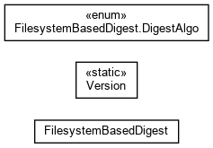

-
Class Summary
| Class |
Description |
| FilesystemBasedDigest |
Class implementing digest like MD5, SHA1.
|
| Version |
Provides the version information of Waarp Digest.
|
-
Package org.waarp.common.digest Description
Classes implementing digests support (MD2, MD5, SHA1, SHA-256/384/512, CRC32, ADLER32)
MD5 can be implemented through Fast MD5 implementation, but can be reverted to JVM native digest
also.
Originally a C library support was optional but it is decided to stay full Java.
Recommendation for best performance would be to use FastMD5 if possible for MD5, but for
portability to use native JVM digest implementations (so no FastMD5 at all).
In order to let you make some choice, here is a short performance reports: (done using java
-server option)
- File based only: (15 MB file used)
- FastMD5 in C is almost the fastest (+20%), while FastMD5 in Java is the slowest (-20%) and
JVM version is in the middle.
- If ADLER32 is the referenced time ADLER32=1, CRC32=2.5, MD5=4, SHA1=7, SHA256=11, SHA512=25
- Buffer based only: (256 MB buffer used)
- JVM version is the fastest (+20%), while FastMD5 in C or in Java are the same (-20% than
JVM).
- If ADLER32 is the referenced time ADLER32=1, CRC32=2.5, MD5=4, SHA1=8, SHA256=13, SHA384=29,
SHA512=31
For information, sphlib (http://www.saphir2.com/sphlib/) were compared to native JVM
implementation for all those digests, and it appears on small benchmarks (speed from sphlib) that
native JVM implementation performs better and that on MD5, FastMD5 performs better than sphlib
but less than native JVM.
Therefore it is recommended to use native JVM MD5 support if possible.